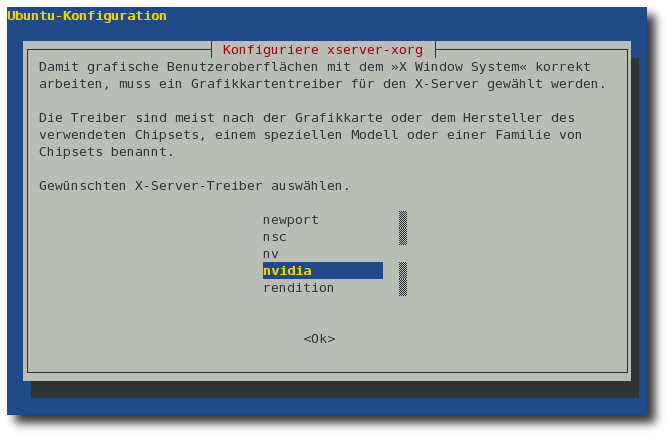
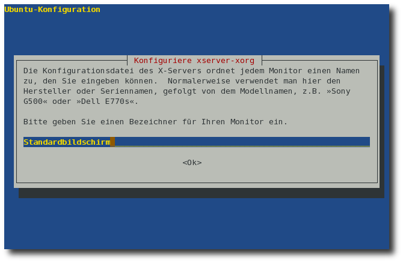
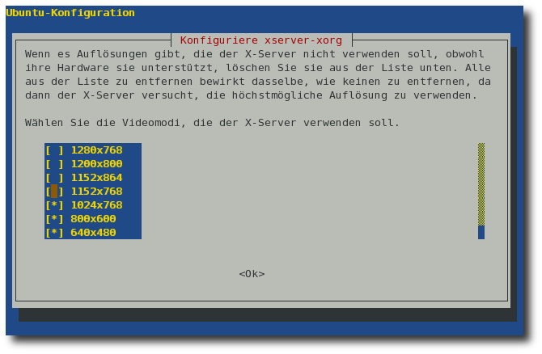
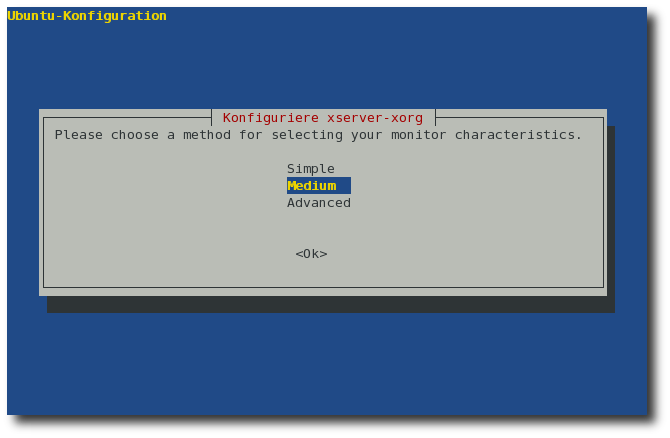
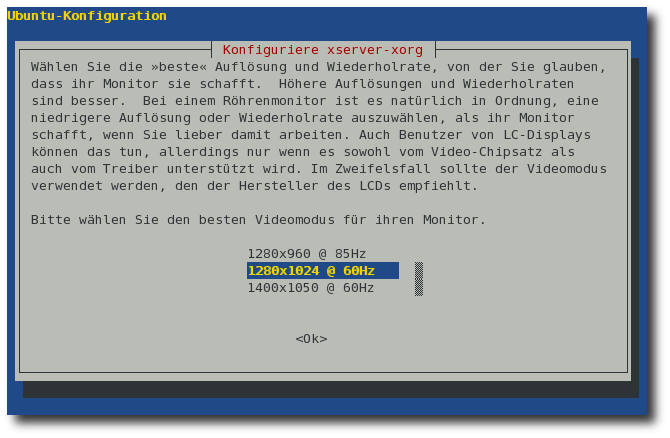
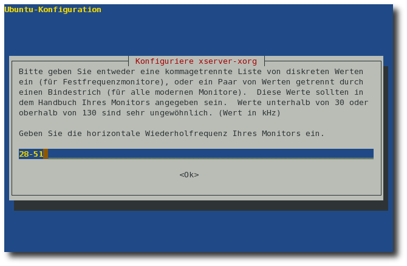

Wiki
Mitmachen
- Wikiartikel anlegen
- Howto anlegen
- Wiki-Referenz
- Wiki-Syntax
- Baustellen
- Artikelideen
- Ungetestete Artikel
- Ausbaufähige Artikel
- Fehlerhafte Artikel
- Rund ums Wiki
Konfiguration
- Backlinks anzeigen
- Exportieren
XServer einrichten
Archivierte Anleitung
Dieser Artikel wurde archiviert, da er - oder Teile daraus - nur noch unter einer älteren Ubuntu-Version nutzbar ist. Diese Anleitung wird vom Wiki-Team weder auf Richtigkeit überprüft noch anderweitig gepflegt. Zusätzlich wurde der Artikel für weitere Änderungen gesperrt.
Zum Verständnis dieses Artikels sind folgende Seiten hilfreich:
Hinweis:
Bei der Entwicklung des XServers versucht man seit einiger Zeit, die Verwendung der Datei /etc/X11/xorg.conf zu minimieren bzw. ganz zu eliminieren. Das Ziel soll letztendlich sein, dass der XServer sämtliche Peripherie, also Bildschirme, Beamer und Eingabegeräte selbstständig während der Laufzeit erkennt und einbindet. Seit Ubuntu 8.04 Hardy Heron merkt man hier erste Auswirkungen. Führt man sudo dpkg-reconfigure xserver-xorg aus, so wird man hier nur noch nach der Konfiguration der Tastatur gefragt. Die Einrichtung von Maus und Bildschirm erfolgt automatisch.
Ab Ubuntu 8.10 Intrepid Ibex werden Eingabe-Geräte (Maus, Tastatur...) nicht mehr über die Datei "xorg.conf" konfiguriert, sondern über HAL. Den entsprechenden Artikel findet man hier im Wiki.
Es kommt vor, dass bei der Installation von Ubuntu der Monitor nicht direkt erkannt wird. In diesem Fall kann z.B. nicht die richtige Auflösung oder Bildwiederholrate eingestellt werden. Um dies zu korrigieren, muss der XServer neu konfiguriert werden.
Prinzipiell könnte man die dafür notwendige Konfigurationsdatei /etc/X11/xorg.conf von Hand editieren, doch es gibt Werkzeuge, die das einfacher gestalten. Grafische Programme zur Konfiguration findet man auf dieser Seite.
Backup der aktuellen Konfiguration¶
Prinzipiell sollte man vor dem Ändern von Konfigurationen immer eine Sicherheitskopie der entsprechenden Dateien machen. Wenn man die Situation verschlimmbessert hat, kopiert man die Sicherungskopie zurück und hat wieder einen funktionierenden XServer. Im Terminal [1] kann man eine Sicherheitskopie mit dem Befehl:
sudo cp /etc/X11/xorg.conf /etc/X11/xorg.conf.bak
erzeugen. Die /etc/X11/xorg.conf.bak ist also eine garantiert funktionierende Datei, die man bei Bedarf mittels
sudo cp /etc/X11/xorg.conf.bak /etc/X11/xorg.conf
wieder zurückkopieren kann.
XServer konfigurieren¶
Nun kann die Konfiguration des XServers gefahrlos begonnen werden. Dazu gibt man den Befehl
sudo dpkg-reconfigure xserver-xorg
ein. Nun wird man schrittweise durch die Konfiguration geführt. Die meisten Fragen können einfach mit einem ⏎ bei den Vorgaben belassen werden. Für die entscheidenden Stellen folgen nun Screenshots.
Automatische Erkennung der Grafikkarte
Ubuntu versucht die Grafikkarte automatisch zu erkennen. Für gewöhnlich sollte man die Voreinstellung bei Ja belassen.
Grafikkartenhersteller auswählen
Hier muss man auf den richtigen Grafiktreiber achten. Hat man z.B. schon den originalen Nvidia-Treiber installiert, muss darauf achtgegeben werden, auch den richtigen Treiber nvidia auszuwählen.
Hinweis:
Der Treiber vesa ist ein allgemeingültiger Treiber, der auf jedem System funktionieren sollte, daher aber auch keinerlei Beschleunigung mitbringt. Er sollte nur übergangsweise oder in Notfällen benutzt werden.

Bezeichnung der Grafikkarte
Danach kann man einen Grafikkartennamen angeben; der Name ist dabei frei wählbar. Die Grafikkarte wird dann unter diesem Namen in der xorg.conf gefunden.
Bus-Identifier festlegen
Bus-Identifier der Karte eingeben; es wird empfohlen, den vorhandenen Wert beizubehalten. Der Wert bestimmt praktisch die Adresse der Karte im Rechner.
Speichergröße der Grafikkarte
Kernel-Framebuffer-Schnittstelle
Die Kernel-Framebuffer-Schnittstelle kann manchmal zu Problemen führen und ist daher standardmäßig deaktiviert.
Automatische Erkennung des Keyboard-Layouts
Die Tastaturbelegung ("keyboard layout") sollte eigentlich direkt bei der Installation korrekt erkannt worden sein. Daher kann man für gewöhnlich diese Frage mit Nein überspringen
Tastatur-Layout
Angabe der Tastaturbelegung. Sollte auf de für Deutsch eingestellt bleiben.
XKB-Ruleset setzen
XKB-Regel. Sollte auf xorg eingestellt bleiben, außer bei Sun-Type-4- und Type-5-Tastaturen, hier sollte sun verwendet werden.
Tastatur-Modell
Das Tastaturmodell sollte für deutsche Tastaturen auf pc105 eingestellt bleiben.
Tastatur-Optionen
Als typischen Wert gibt man hier nodeadkeys ein, um bei einem Druck auf
^sofort ein^zu erzeugen und nicht erst in Kombination mit der Leertaste.
Automatische Erkennung der Maus
Es wird empfohlen, die automatische Erkennung der Maus durchführen zu lassen, bei PS/2- und USB-Mäusen klappt das normalerweise; die Gerätedatei ist in den meisten Fällen /dev/input/mice. Bei Mäusen mit einem serielle Anschluss, unter Windows auch COM genannt, muss als Gerätedatei folgendes angegeben werden: /dev/ttyS0, ttyS0 steht für den ersten seriellen Anschluss.
3-Tasten-Maus emulieren
Besitzt man eine Maus mit mehr als zwei Tasten, sollte man diese Frage mit Nein beantworten.
Server Module
Hier erhält man eine Übersicht der vom XServer geladenen Module, diese Liste kann man normalerweise unverändert bestätigen.
Write Default Files Section?
Nur erfahrene Benutzer antworten hier mit "Nein", meist reicht ein Ja.
Automatische Erkennung des Bildschirms
Nun versucht Ubuntu den Monitor automatisch zu erkennen. Schlägt dies fehl, so steht hier Standardbildschirm. Man kann diesen Eintrag durch die korrekte Bezeichnung des Monitors ersetzen. 
Auflösungen auswählen
Der XServer ist in der Lage, mehrere Auflösungen darzustellen. Welche das sein sollen, kann man hier auswählen. Alle Auflösungen, die man nutzen möchte, müssen hier ausgewählt werden. Hinweis: Die Auswahl der Auflösungen muss mit , das Abschließen des Schrittes mit ⏎ vorgenommen werden. 
Modus auswählen
Die Konfiguration des Bildschirms kann etwas umständlich sein, ganz besonders wenn man keine Daten zum Gerät besitzt. Ubuntu bietet nun mehrere Möglichkeiten, hier fortzufahren. Besitzer eines TFT-Bildschirms sollten hier Medium wählen, Leute mit genauen Kenntnissen über ihren Monitor Advanced. 
Medium
Im Medium-Modus reicht es, hier die gewünschte Auflösung und Wiederholrate einzustellen. Besitzer von TFT-Bildschirmen wählen für gewöhnlich die native (d.h. physikalische) Auflösung des Monitors bei 60 Hertz. 
Advanced
Möchte man die Details korrekt angeben, wählt man den erweiterten Modus. Hier können die Werte für die horizontale und vertikale Wiederholrate exakt eingetragen werden. Wie man diese Werte herausbekommt, ist auf der Seite Bildschirmauflösung beschrieben. 
Farbtiefe
Als letzten Schritt wählt man die Bildschirmfarbtiefe aus (8 Bit: 256 Farben, 16 Bit: High Color und 24 Bit: True Color (entspricht 32 Bit Farbtiefe)).
XServer testen (Gnome)¶
Es ist möglich, die neue Konfiguration zu testen, ohne den aktuell laufenden XServer zu beenden. So kann man die neue Konfiguration testen, ohne dass man auf einen laufenden XServer verzichten muss. Dazu muss man in einem Terminalfenster den Befehl
gdmflexiserver
eingeben. Das startet einen neuen XServer inkl. GDM. Man kann sich in diesen XServer wie gewohnt einloggen und damit arbeiten. Mittels
Alt + Strg + F7
bzw.
Alt + Strg + F9 ist es möglich zwischen den beiden Servern hin- und herzuschalten und den neuen natürlich mit Alt + Strg + ⌫ zu beenden, wenn dieser gerade aktiviert ist. Gibt es beim Start des XServers Probleme, so kann man unter /var/log/Xorg.1.log die Log-Files des zweiten Servers einsehen.
XServer neu starten¶
Hat man die Konfiguration abgeschlossen, muss der XServer neu gestartet werden. Wenn der XServer selber gerade nicht läuft, macht man dies beim Einsatz von Ubuntu bzw. GDM über den Befehl:
sudo /etc/init.d/gdm restart
oder beim Einsatz von Kubuntu bzw. KDM mit:
sudo /etc/init.d/kdm restart
Falls der XServer noch läuft, kann auch die Tastenkombination Alt + Strg + ⌫ genutzt werden - ohne manuellen Eingriff ist das aber nur bis einschließlich Ubuntu 8.10 Intrepid Ibex möglich. Ab Ubuntu 9.04 Jaunty Jackalope wird stattdessen die Kombination Alt + Druck + K verwendet. Nach diesem Neustart sollte er mit der gewünschten Auflösung und Wiederholrate geladen werden.
Weitere Backups¶
Neben dem oben von Hand erstellten Backup legt das Setup noch eine Sicherungskopie der vorhandenen xorg.conf an (xorg.conf.YYYYMMDD). Falls der XServer nicht mehr ordnungsgemäß (oder womöglich überhaupt nicht mehr) startet, kann man anhand der Fehlermeldungen auf dem Schirm bzw. in der Datei /var/log/Xorg.0.log versuchen, den Fehler einzugrenzen, und die /etc/X11/xorg.conf per Hand in einem Texteditor mit Root-Rechten [2] anzupassen. Falls das auch nicht klappt oder der Fehler nicht eingrenzbar ist, kann man die vorige xorg.conf zurückkopieren. Ist dieses nicht mehr vorhanden, kann der XServer im Recovery Modus repariert werden (es wird nach dem Schema xorg.conf.YYYYMMDD eine neue Datei erstellt).
Diese Revision wurde am 3. Dezember 2013 02:36 von aasche erstellt.
- Erstellt mit Inyoka
-
 2004 – 2017 ubuntuusers.de • Einige Rechte vorbehalten
2004 – 2017 ubuntuusers.de • Einige Rechte vorbehalten
Lizenz • Kontakt • Datenschutz • Impressum • Serverstatus -
Serverhousing gespendet von